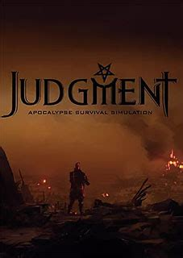

|
OUTRIDERS
Modos de jogo: Multijogador/on-line.
Lançamento: Abril de 2021.
Desenvolvedor: Square Enix, People Can Fly.
Descrição de jogo:
Em um mundo sombrio tomado por sangue e guerra a última
esperança irá viajar entre montanhas desertos e florestas para
poder buscar a paz em meio a tanto sangue e violência.
|
 |
THE MEDIUM
Gênero: Suspense e terror.
Modos de jogo: Um jogador.
Lançamento: Janeiro de 2021.
Desenvolvedor: Bloober Team.
Descrição de jogo:
Com a morte de seu pai adotivo Marianne se vê perdida, sem
respostas e sem lembranças de seu passado e com o incrível
dom de ver e falar com os mortos, quando já não tinha mais
esperanças misteriosamente seu passado veio até ela, e ela terá
de desvendar as pistas e enfrentar perigos para descobrir sua história.
|
|
ODDWORLD SOULSTORM
Gênero: Ação e aventura.
Modos de jogo: Um jogador.
Lançamento: Abril de 2021.
Desenvolvedor: Oddworld Inhabitants, Just Add Water, Sabotage Studio,
Frima Studio, Fat Kraken Studios.
Descrição de jogo:
Após abandonar uma corporação você deverá dedicar sua vida a liberdade,
recrutando seguidores e protegendo seus amigos e aliados a defenderem sua causa.
|
|
STAR WARS: REPUBLIC COMMAND
Gênero: Tiro.
Modos de jogo: Multijogador/on-line.
Lançamento: Abril de 2021.
Desenvolvedor: Aspyr Media, LucasArts.
Descrição de jogo:
No universo de star wars, você deve lutar por sua vida derrotar
os inimigos e o mais importante, proteger seus companheiros.
|
|
THE LEGEND OF HEROES: TRAILS OF COLD STEEL IV
Gênero: RPG de aventura.
Modos de jogo:.
Lançamento: Abril de 2021.
Desenvolvedor: Nihon Falcom, Engine Software, PH3 GmbH, Reactor sc.
Descrição de jogo:
Um grande conflito armado está prestes a destruir o continente, e apenas
os verdadeiros heróis podem salva-lo, é necessário que eles se reúnam
e parem o conflito antes que todo o continente seja destruído.
|
|
POISON CONTROL
Gênero: RPG de aventura e tiro.
Modos de jogo: Um jogador.
Lançamento: Abril de 2021.
Desenvolvedor: Nippon Ichi Software.
Descrição de jogo:
Emoções de algumas garotas criaram um novo reino, lindo e curioso.
No entanto, os delírios delas tornaram-se monstros assustadores,
e agora elas terão de lutar com seus monstros.
|
|
MLB THE SHOW 21
Gênero: Esportes.
Modos de jogo: Multijogador.
Lançamento: Abril de 2021.
Desenvolvedor: SIE San Diego Studio.
Descrição de jogo:
Baseado na maior liga de beisebol agora você poderá ter toda a
experiência de fazer parte da maior liga sem sair de casa.
|
|  |
JUDGMENT
Gênero: Ação e aventura.
Modos de jogo: Um jogador.
Lançamento: Abril de 2021.
Desenvolvedor: Sega, Ryu Ga Gotoku Studio.
Descrição de jogo:
Um advogado arruinado agora deve lutar contra seus pecados
e para conquistar um perdão a si mesmo e buscando redimir seus pecados.
|
|
TOTAL WAR: ROME REMASTERED
Gênero: Ação e Aventura.
Modos de jogo: Multijogador/on-line.
Lançamento: Abril de 2021.
Desenvolvedor: Creative Assembly, Feral Interactive.
Descrição de jogo:
Sinta-se lutando em roma, o fervor e a adrenalina da época,
gráficos incríveis e uma jogabilidade surpreendente acompanhado
de uma dinâmica de jogo envolvente.
|
|
NEW POKEMON SNAP
Gênero: Simulador de exploração.
Modos de jogo: Um jogador.
Lançamento: Abril de 2021.
Desenvolvedor: BANDAI NAMCO Studios.
Descrição de jogo:
Explore o mundo de Pokémon, catalogando e descobrindo diversas
espécies e explorando novos ambientes.
|